|
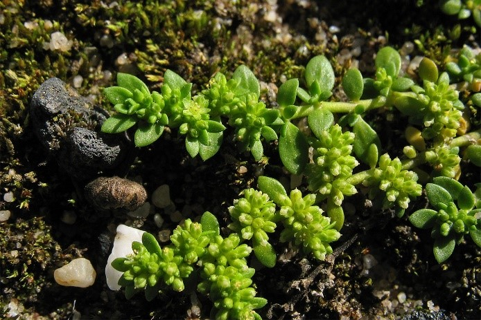
Стебли многочисленные, лежачие, как бы прижатые к почве, почти голые или слегка коротко волосистые, разветвлённые,
5—10 см высотой. Растение в сухом состоянии пахнет кумарином. Корень деревянистый, тонкий, стержневой. Листья супротивные,
продолговато- или обратнояйцевидные или эллиптические, мелкие 2—10 мм длиной и 1—3 мм шириной, островатые или тупые,
к основанию сужены в очень короткий черешок, голые или слегка опушённые, желтовато- или светло-зелёные.
Прилистники 1—1,5 мм длиной, треугольно-яйцевидные, плёнчатые, белые, по краю тонко реснитчатые.
Фотограф: Андрей Ковальчук |
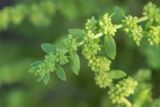
Растения однолетние, опушенные. Стебли раскидистые, 3--15 см. Черешок короткий; листовая пластинка продолговато-эллиптическая,
3--10×1--3 мм, основание ослабленное, верхушка тупая. Клубочки листовидные, (6--)10--12- и более цветковые.
Цветки 4-метровые, 1,4--1,5(--1,7) мм. Чашелистики ланцетные, ок. 1,5 ×0,5 мм, абаксиально волосистые, верхушка верхушечная.
Тычинок 4, короче чашелистиков. Стиль (0,3--) 0,5 мм, часто длиннее чашелистиков в зрелом возрасте, разделен примерно на 1/3 длины.
Семянка яйцевидная, чашечка субэкваториальная. фл. июль-август, фр. август-сентябрь.
Фотограф: Илья Михеев |
|
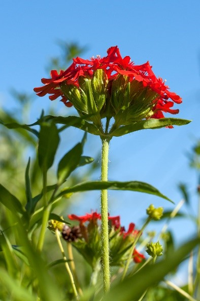
Многолетнее растение 30–100 см высотой, с коротким корневищем и утолщёнными придаточными корнями. Стебель прямой,
четырёхгранный, опушённый. Листья ланцетные, на верхушке сужающиеся; нижние 3–5 пар листьев ко времени цветения отмирают.
Соцветие обычно из 3–5 цветков, собранных в щитковидное или головчатое соцветие. Цветки крупные. Чашечка до 20 мм длиной и 4–6 мм шириной,
колокольчатая, густо войлочно опушённая. Венчик 3–4.5 см в диаметре, кирпично-красный;
отгиб лепестков глубоко надрезан на продолговато-линейные доли; придатки лепестков продолговатые, бахромчатые.
Плод – яйцевидная коробочка; семена треугольно-сердцевидные, бугорчатые, коричневые. Цветёт в июне–июле.
Фотограф: Дмитрий Орешкин |
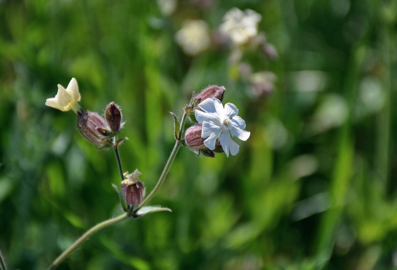
Однолетнее и двулетнее растение. Ст. внизу пушистый, вверху мягко железисто-волосистый, прямой, ветвистый, 40—100 см выс.;
нижние л. эллиптические, суженные в чрш.‚ верхние сидячие, заостренные, 4—5 см дл., 1—2.5 см шир. Цв. однополые, двудомные,
вначале в б. м. густом сцв., впоследствии в более рыхлом; чшч. железисто-клейкая, и, кроме того, с оттопыренными простыми волосками,
15—20 мм дл.‚ у пыльниковых цв. трубчато-колокольчатая, с 10 жилками, у пестичных широко-яйцевидная, при пл. по середине вздутая,
наверху суженная, с 20 жилками; лп. белые, пластинка их глубоко- двураздельная, при основании с привенчиком до 2 мм выс.;
коробочка яйцевидная, с 10 прямыми зубцами, 1.5 см дл. и 1.2—1.5 см шир.; с. почковидные, 1.5 мм дл. и 1 мм шир.‚
сероватые с концентрически расположенными бугорками с звездчатым основанием. VI—VIII.
Фотограф: Марина Скотникова |
|
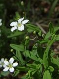
Корневища образуют разветвленную сеть. Стебли восходящие или лежачие, часто ветвистые, теретные, 5-30 см,
равномерно ретроорсально опушенные. Листья сидячие или сидячие; черешок 0,1–1 мм;, края зернистые до мелко зубчато-реснитчатых,
верхушка тупая или закругленная. Соцветия 1-5-цветковые; прицветники 1-3 мм, края щитковидные. Цветоножки прямостоячие, 3-30 мм.:
чашелистики 5, средняя жилка не килевидная, яйцевидная или обратнояйцевидная, травянистая часть продолговато–эллиптическая,
1,7-2,8 (-3) мм, края узкие, вершина в основном тупая или округлая; лепестки 5, 3-6 мм, примерно в 2 раза длиннее чашелистиков.
Капсулы субглобальные, 3-5 мм, в 11/2–2 раза длиннее чашелистиков.
Фотограф: Марина Ворошилова |
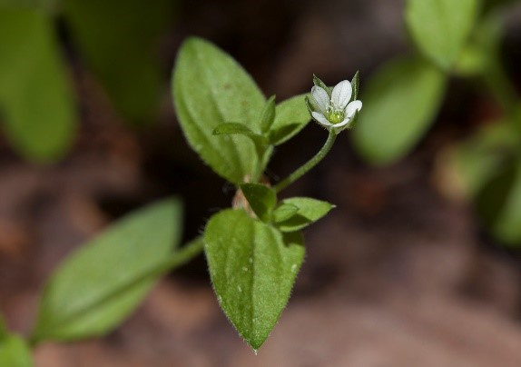
Одно- или двулетние растения, образующие очень рыхлую дерновинку. Стебли 10-30 см выс., распростертые,
приподнимающиеся или прямые, от основания ветвистые коротко опушенные. Листья 5-15 мм дл., 3-10 мм шир.,
яйцевидные или яйцевидно-продолговатые, заостренные, с 3(5) жилками, нижние на черешках, по краю у основания реснитчатые,
пластинки их голые или коротко опушенные. Цветки одиночные пазушные или верхушечные, цветоножки 5-25 мм дл. Чашелистики 3-4 мм дл.,
ланцетные, заостренные, с опушенной выдающейся срединной жилкой, по краям пленчатые и реснитчатые, лепестки продолговато-обратно-яйцевидные,
на 1/3 короче чашечки. Коробочка шаровидно-яйцевидная, короче чашечки.
Фотограф: Светлана Нестерова |
|
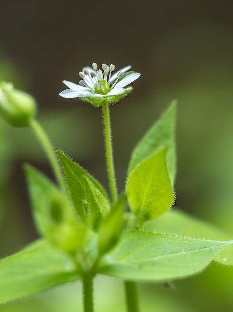
Прикорневые листья на черешках, стеблевые листья обычно сидячие, яйцевидной или широко-эллипсоидальной формы, заострённые к концу.
Цветки собраны в рыхлые щитковидные дихазиальные соцветия в пазухах листьев и на концах побегов. Прицветники парные,
супротивные, листовидные, цветоножки после цветения поникающие, железисто опушённые. Чашечка, железисто опушённая,
разделена на 5 чашелистиков яйцевидной формы, зелёного цвета, по краю иногда беловатая. Венчик из пяти белых лепестков,
каждый из которых глубоко разделён на две доли. Тычинки в количестве десяти, иногда недоразвитые, свободные. Нижний круг тычинок,
супротивный чашелистикам, служит для перекрёстного опыления, а внутренний круг, состоящий также из пяти тычинок и
супротивный лепесткам — для самоопыления. Пестики в количестве пяти — шести, нитевидные.
Фотограф: Илья Михеев |
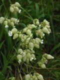
Растение голое. Стебель 40-100 см выс., прямостоячий, наверху ветвистый. Листья ланцетовидные или яйцевидно-ланцетовидные,
4-10 см дл. и 1-3 мм шир., острые, сидячие. Цветы разнородные на цветоножках равных или длиннее чашечки в зонтиковидных соцветиях.
Чашечка голая, вздутая, широко-яйцевидная, 13-18 мм дл. и 7-10 мм шир., с 20 жилками, соединенными анастомозами;
зубцы чашечки широко-треугольные, острые по краю реснитчатые. Лепестки белые (редко розоватые) с голыми,
довольно быстро расширенными на верхушке ноготками, которые в 1,5 раза, реже в 2 длиннее отгиба, глубоко, почти до основания,
рассеченного на 2 обратно-яйцевидные, к основанию клиновидно суженные доли, 4-8 мм дл., при основании без придатков (1).
Коробочка почти шаровидная 8-9 мм в диаметре, капрофор голый, 2 мм дл. Семена почковидные, бугорчатые, 1,5 мм дл. и 2 мм шир.
Фотограф: Юлия Райская |
|
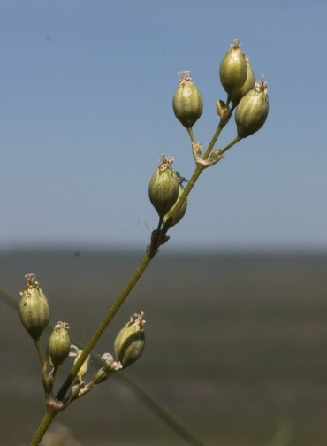
Двулетние растения 10-60 см выс. Стебли красновато-фиолетовые, в нижней части коротко серо опушенные.
Прикорневые листья узколопатчатые, мелкие, стеблевые ланцетные, с укороченными побегами в пазухах. Соцветие кистевидное или метельчатое.
Чашечка колокольчатая, 3-4 мм дл., голая, зеленая, с тупыми белоокаймленными зубцами. Лепестки изнутри белые,
снаружи зеленоватые, цельные, клиновидные. Коробочка эллипсоидная, 5-7 мм дл., на ножке ок. 1 мм дл. Семена черные,
почковидные, бугорчатые.
Фотограф: Михаил Князев |
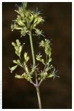Фотограф: Игорь Павлов |
|
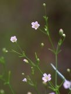
Семядоли длиной 3-6, шириной 0,5-1 мм, продолговато-линейно-ланцетные. Первые два листа длиной 7-10, шириной 1-1.5 мм,
линейные, по краю мелко опушенные. Эпикотиль невысокий. Гипокотиль короткий. Корень стержневой. Стебель ветвисто растопыренный,
внизу опушенный, высота 5-20 см. Листья линейные, сидячие. Цветки расположены в развилках и на верхушках стеблей, лепестки розовые,
с темно-пурпуровыми жилками. Плод - яйцевидная многосемянная коробочка. Семена почковидно округлые, сдавленные с боков,
темно-коричневые, почти черные. Растет на полях, лугах и пастбищах, в обилии на солонцеватых, осолоделых, тяжелосуглинистых,
песчаных почвах.
Фотограф: Юлия Райская |
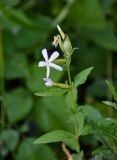
Растение голое или шероховато-коротко-пушистое; ст. прямостоячий, простой или в верхней части ветвистый, округлый,
30—90 см выс.; л. продолговатые, овально- ланцетные или эллиптические, о трех жилках, острые, 5—12 см дл.‚ 1—4 см шир.,
остро-шероховатые по краю, суженные при основании в короткий чрш. Цв. в щитковидно-метельчатом, рыхлом сцв.; цвн. укороченные;
прицв. линейно-ланцетовидные; чшч. цилиндрическая, 15—18 мм дл. и 4—5 мм шир.‚ коротко-пушистая с неравными яйцевидно-притупленными
с остроконечиями зубцами; лп.белые или розовые, с продолговато-обратно- яйцевидными, наверху выемчатыми, иногда целыми, отгибами,
при основании с двумя небольшими придатками, коробочка продолговато-яйцевидная; с. многочисленныё, мелкие, почковидные,
мелко-бородавчатые. VI—VШ.
Фотограф: Марина Скотникова |
|
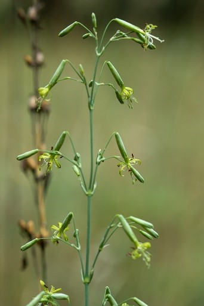
Растение многолетнее. Стебель прямой, не ветвистый, голый, 30-80 см выс. Прикорневые листья ланцетовидные, 3-9 см дл. и 4-9 см шир.,
суженые у основания в черешок, по краям шероховатые. Стеблевые листья линейно-ланцетовидные или линейные, более мелкие.
Соцветие - узкая, односторонняя кистевидная метелка с прижатыми к стеблю или косо направленными вверх трех-многоцветковыми ветками.
Цветки поникающие, на довольно длинных равных или длиннее чашечки цветоножках, собраны по нескольку на супротивных веточках соцветия.
Прицветники яйцевидно-ланцетовидные, пленчатые, по краям реснитчатые. Чашечка трубчатая, 9-12 мм дл. и 2-3 мм шир.,
голая с тупыми зубцами и малозаметными жилками. Лепестки зеленовато-желтоватые, в 1,5 раза длиннее чашечки.
Фотограф: Илья Михеев |
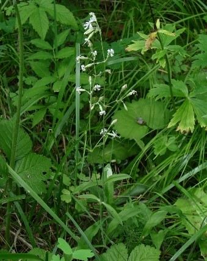
Растение многолетнее. Стебли прямые, одиночные или в числе нескольких, 30-70 см выс., коротко пушистые,
наверху обыкновенно железистые, при основании с бесплодными облиственными побегами. Прикорневые листья лопатчатовидные,
суженые в черешок, равный пластинке или более длинный, вместе с которым они 5-15 см дл. и 0,7-1,5 см шир., наверху острые с той и
другой стороны коротко-волосистые; стеблевые листья в числе 2-4 пар, ланцетовидные, длинно заостренные, коротко-опушенные,
в пазухах иногда с укороченными побегами. Цветки, поникшие в продолговатой, рыхлой, односторонней метелке на опушенных цветоножках,
равных чашечки или немного длиннее или короче ее. Чашечка трубчатая, 8-12 мм дл., 3-3,5 мм шир., с острыми по краям пленчатыми зубцами,
железисто-опушенная редко, как и все растение, голая). Лепестки нечисто белые с довольно длинными и узкими, почти шиловидными придатками.
Фотограф: Людмила Паламарчук |
|
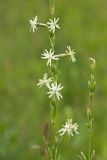
Многолетник с прямыми, при основании древеснеющими, опушенными, выше голыми красноватыми стеблями,
с укороченными побегами в пазухах стеблевых листьев. Листья ланцетные, острые, на коротких черешках. Цветки в кистевидной метелке.
Чашечка длиной 10-11 мм, ши риной 2,5 мм, голая, с острыми зубцами, иногда, как и стебель, красноватая.
Прицветники ланцетовидные, длиной около 6 мм, пленчатые, по краям реснитчатые. Лепестки белые или слегка желтоватые,
в 1,5 раза длиннее чашечки. Пластинка лепестка до ~/з рассечена на линейные доли, при основании без придатков, лишь с двумя бугорками.
Коробочка продолговатая, на короткой, чуть опушенной ножке. Цветет в мае — августе.
Фотограф: Андрей Белехов |
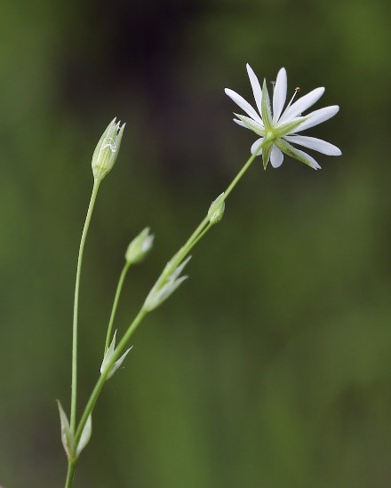
Многолетнее растение. Растение голое, стебли 4-гранные, приподнимающиеся, простые или ветвистые, 10—40 см выс.;
Листья ланцетно-линейные, 1 — 3 см дл. и 1,5—3 мм шир., обыкновенно по краям в основании слегка ресничатые;
соцветие — малоцветковая, рыхлая метелка; прицветники ланцетные, пленчатые, по краям ресничатые; чашелистики широколанцетные,
заостренные, 4—5 мм дл.; лепестки равны чашелистикам или немного короче, глубоко двураздельные на линейно-продолговатые доли;
коробочка продолговато-яйцевидная, 4—5 мм дл.Цветет в мае - июле.
Фотограф: Игорь Павлов |